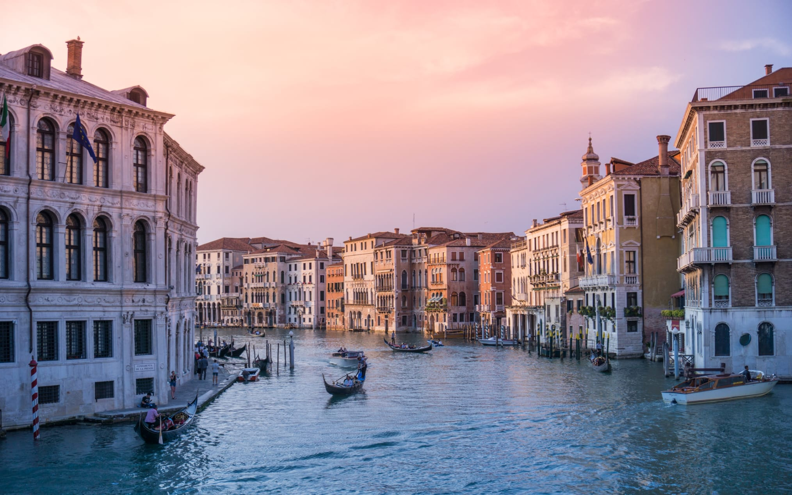

Marcel Nikolic
Berlin, Germany
Toujours à la recherche de LA photo
#travel
#architecture
Contactez-moi
Trier par
Popularité
Date
Titre
Popularité
Date
Titre
Japanese Tower, Kyoto
25

Senset on Canals, Venice
53
Mountain and Lake
33
City Bike and Stair, Paris
53
Adventure Door, India
63
Contrast, St Petersburg
52
On a Hill, Tibet
63
Leaning Tower, Pisa
88
Circle Highways, Buenos Aires
57
Corner Building and Blue Sky
54
Contactez-moi
Marcel Nikolic
×
Prénom
Nom
Email
Votre message
Envoyer
×
Japanese Tower, Kyoto
Senset on Canals, Venice
Mountain and Lake
City Bike and Stair, Paris
Adventure Door, India
Contrast, St Petersburg
On a Hill, Tibet
Leaning Tower, Pisa
Circle Highways, Buenos Aires
Corner Building and Blue Sky